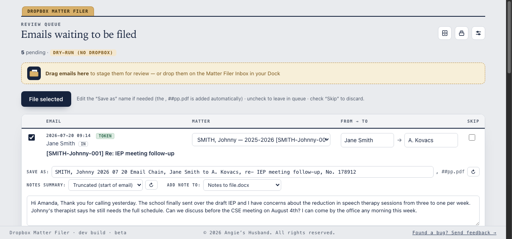
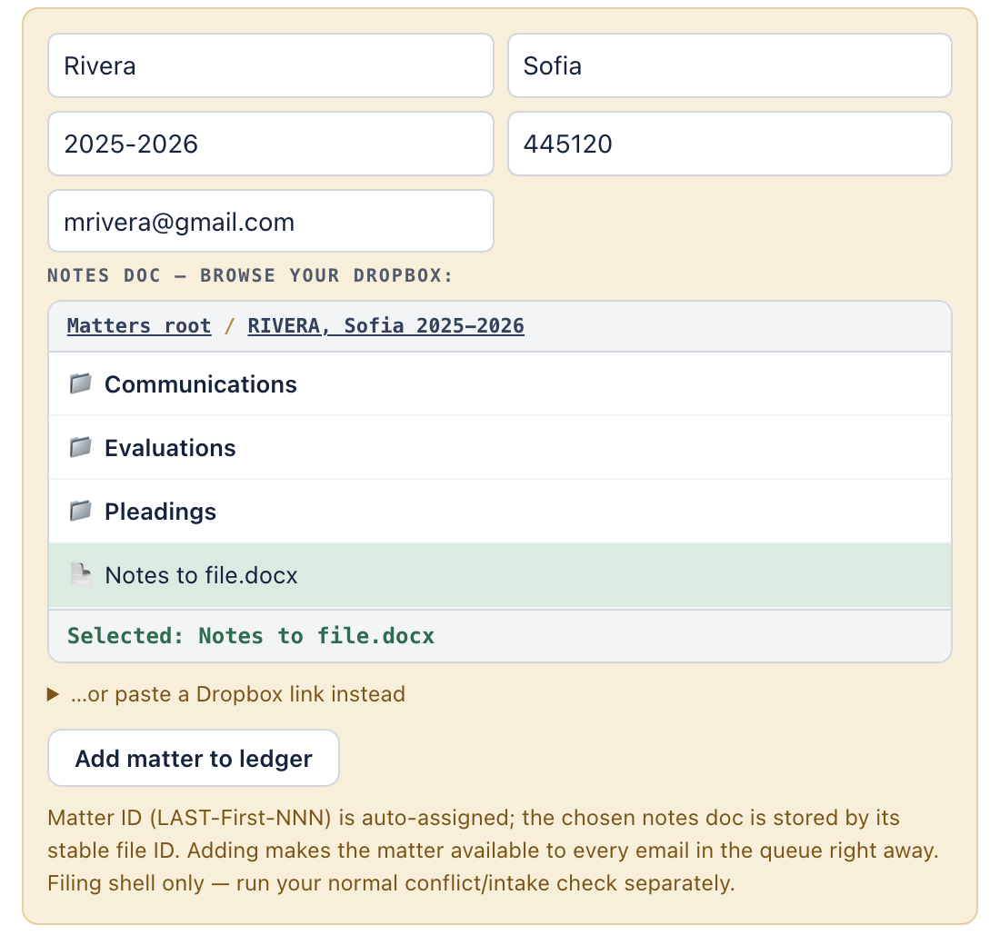
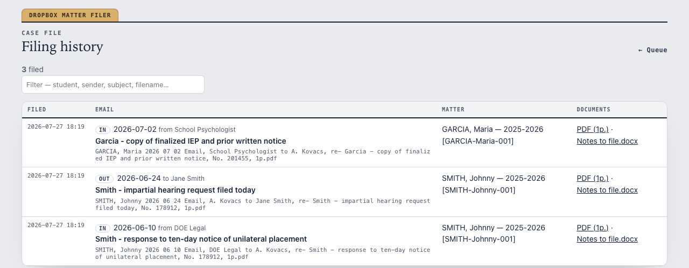

For the firm's attorneys and paralegals
Drag a message out of Outlook. It's saved as a PDF in that matter's Communications folder and a dated line is added to the notes doc — after you review and confirm. Nothing files on its own.
Saved as
Appended to the notes doc
12/01/2024 AK Email received from CSE Team
Summary: CSE meeting set for next Tuesday at 10am;
bring the latest evaluations to discuss IEP goals.
The review screen
Filing happens in one local screen at 127.0.0.1:8765.
Each email arrives with its matter already picked and a filename built in the firm's
convention. You glance, adjust anything that's off, and file.

New client, no matter yet
Create the matter without leaving the queue. Fill in the student, pick the matter's notes doc from your Dropbox, and click Add matter to ledger — it lands in the ledger and appears in every email's matter list at once, so a new client's whole batch files in one pass.

Drag the message into the Matter Filer › Inbox folder in your home folder.
Open the review screen. The matter is pre-selected; adjust the name, summary, or matter if it's wrong.
Click File selected. The PDF lands in Communications and the dated line is added to the notes doc.
The history screen
The paper trail keeps itself. Every filed email is on the History screen — when it was filed and to which matter — with one-click links to the PDF and the notes entry it produced.

127.0.0.1:8765, and creates a Matter Filer folder in your
home folder.~/Matter Filer/
and are never overwritten by an update.